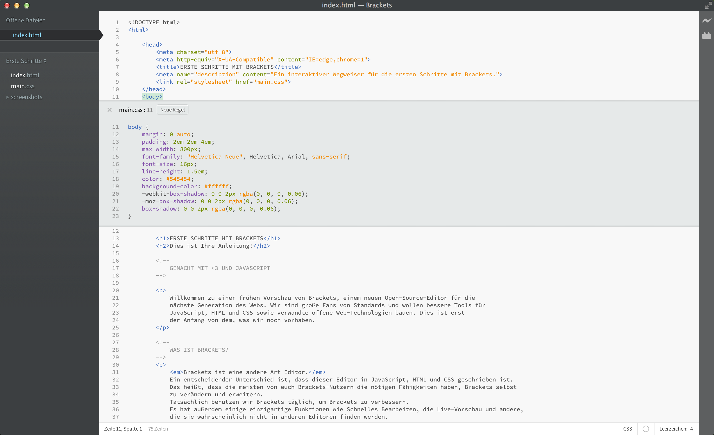

Willkommen zu einer frühen Vorschau von Brackets, einem neuen Open-Source-Editor für die nächste Generation des Webs. Wir sind große Fans von Standards und wollen bessere Tools für JavaScript, HTML und CSS sowie verwandte offene Web-Technologien bauen. Dies ist erst der Anfang von dem, was wir noch vorhaben.
Brackets ist eine andere Art Editor. Ein namhafter Unterschied ist, dass dieser Editor in JavaScript, HTML und CSS geschrieben ist. Das heißt, dass die meisten von euch Brackets-Nutzern die nötigen Fähigkeiten haben, um Brackets selbst zu verändern und erweitern. Tatsächlich nutzen wir Brackets täglich, um Brackets zu verbessern. Es hat sogar einige einzigartige Funktionen wie Schnelles Bearbeiten, die Live-Vorschau und andere, die sie wahrscheinlich nicht in anderen Editoren finden werden. Lesen Sie weiter, um zu erfahren, wie sie diese Funktionen nutzen können.
Kein Wechsel zwischen Dokumenten mehr - so verlieren Sie nie den Überblick. Wenn Sie HTML editieren, können Sie die Tastenkombination Cmd/Strg + E verwenden, um einen schnellen Inline-Editor anzuzeigen, der Ihnen alle relevanten CSS-Regeln anzeigt. Ändern Sie etwas in dem CSS, drücken Sie ESC und schon sind Sie zurück im HTML-Code. Oder lassen Sie die CSS-Regeln einfach offen und sie werden Teil Ihres HTML-Editors. Sobald Sie ESC außerhalb eines Schnell-Editors drücken, schließen sich alle.
Sie wollen das in Aktion sehen? Setzen Sie Ihren Cursor auf den -Tag oben und drücken Sie Cmd/Strg + E. Sie sollten oben einen CSS-Schnell-Editor erscheinen sehen. Rechts sehen Sie eine Liste der CSS-Regeln, die sich auf diesen Tag beziehen. Scrollen Sie einfach mit Alt + Oben/Unten durch die Regeln, um die zu finden, die Sie bearbeiten wollen. Sie können das gleiche Tastenkürzel in JavaScript-Code verwenden, um den Rumpf einer Funktion anzuzeigen, die Sie aufrufen, indem Sie den Cursor auf den Funktionsnamen setzen. Im Augenblick können Inline-Editoren nicht verschachtelt werden. Sie können das schnelle Bearbeiten also nur nutzen, während der Cursor sich in einem "Vollgröße"-Editor befindet.
Sie kennen den "Speichern/Neu laden-Tanz", den wir seit Jahren aufführen? Der, in dem Sie Änderungen in Ihrem Editor machen, Speichern drücken, zum Browser schalten und dann neu laden, um schließlich das Ergebnis zu sehen? Mit Brackets müssen Sie diesen Tanz nicht aufführen.
Brackets öffnet eine Live-Verbindung zu Ihrem lokalen Browser und sendet HTML- und CSS-Updates, während Sie tippen! Eventuell tun Sie etwas Ähnliches bereits heute mit browserbasierten Tools, doch mit Brackets ist kein Kopieren und Einfügen des endgültigen Codes im Editor mehr nötig. Ihr Code läuft im Browser, aber lebt in Ihrem Editor!
Brackets macht es Ihnen leicht, zu sehen, welche Auswirkungen Ihre Änderungen in HTML und CSS auf die Seite haben werden. Wenn Ihr Cursor auf einer CSS-Regel platziert ist, hebt Brackets alle zugehörigen Elemente im Browser hervor. Genauso wird Brackets beim Editieren einer HTML-Datei die entsprechenden HTML-Elemente im Browser markieren.
Falls Sie Google Chrome installiert haben, können Sie das selbst ausprobieren. Klicken Sie auf das Blitz-Symbol oben rechts oder drücken Sie Cmd/Strg + Alt + P. Wenn die Live-Vorschau für ein HTML-Dokument eingeschaltet ist, können alle verknüpften CSS-Dokumente in Echtzeit bearbeitet werden. Das Symbol ändert sich von grau nach golden, wenn Brackets eine Verbindung zu Ihrem Browser herstellt. Platzieren Sie Ihren Cursor jetzt auf dem -Tag oben. Sie sehen in Chrome eine blaue Markierung, die um das Bild herum erscheint. Nutzen Sie nun Cmd/Strg + E, um die definierten CSS-Regeln anzuzeigen. Probieren Sie, die Stärke des Rahmens von 1px auf 10px zu ändern, oder ändern Sie die Hintergrundfarbe von "dimgray" zu "hotpink". Falls Sie Brackets und Ihren Browser nebeneinander laufen haben, können Sie die Änderungen sofort in Ihrem Browser erkennen. Cool, was?Derzeit unterstützt Brackets die Live-Vorschau nur für HTML und CSS. Allerding werden in der aktuellen Version Änderungen an JavaScript-Dateien automatisch neu geladen, wenn Sie diese speichern. Wir arbeiten momentan an der Unterstützung der Live-Vorschau für JavaScript. Die Live-Vorschau ist außerdem nur mit Google Chrome möglich, doch wir hoffen, diese Funktionalität zukünftig zu allen wichtigen Browsern hinzuzufügen.
Für die unter uns, die immer noch nicht die Farb-Äquivalente von HEX- und RGB-Werten kennen, macht es Brackets einfach und schnell, exakt zu sehen, welche Farbe genutzt wird. Fahren Sie in HTML oder CSS einfach über einen Farbwert oder -verlauf und Brackets wird Ihnen automatisch eine Vorschau davon anzeigen. Das selbe gilt für Bilder: Platzieren Sie den Cursor im Brackets-Editor über einem Link zu einem Bild und er wird ein Miniaturansicht von diesem Bild zeigen.
Um die Schnellansicht bei Hover selbst auszuprobieren, können Sie Ihren Cursor auf dem -Tag am Anfang dieses Dokuments platzieren und Cmd/Strg + E drücken, um einen CSS-Schnell-Editor zu öffnen. Fahren Sie nun einfach mit dem Cursor über einen der Farbwerte im CSS-Code. Sie können das auch mit Farbverläufen sehen, wenn Sie einen Schnell-Editor für den -Tag anzeigen lassen und über irgendeinen der "background-image"-Farbwerte fahren. Um die Bildvorschau auszuprobieren, können Sie Ihren Cursor auf dem Screenshot-Link platzieren, den Sie weiter oben in diesem Dokument finden.Zusätzlich zu all dem, was in Brackets eingebaut ist, hat unsere große und wachsende Community der Erweiterungs-Entwickler über hundert Erweiterungen erstellt, die nützliche Funktionen bringen. Wenn Sie etwas brauchen, das es nicht in Brackets gibt, ist es sehr wahrscheinlich, dass bereits jemand eine Erweiterung dafür geschrieben hat. Um die Liste der verfügbaren Erweiterungen zu durchstöbern oder zu durchsuchen nutzen Sie Datei > Erweiterungs-Verwaltung und klicken auf den Tab "Verfügbar". Wenn Sie eine Erweiterung finden, die Sie nutzen wollen, klicken Sie einfach auf den "Installieren"-Button daneben.
Brackets ist ein Open-Source-Projekt. Web-Entwickler rund um die Welt helfen mit, einen besseren Code-Editor zu bauen. Noch mehr erstellen Erweiterungen, die die Möglichkeiten von Brackets erweitern. Lassen Sie uns wissen, was Sie denken, teilen Sie Ihre Ideen oder tragen Sie direkt zu dem Projekt bei.